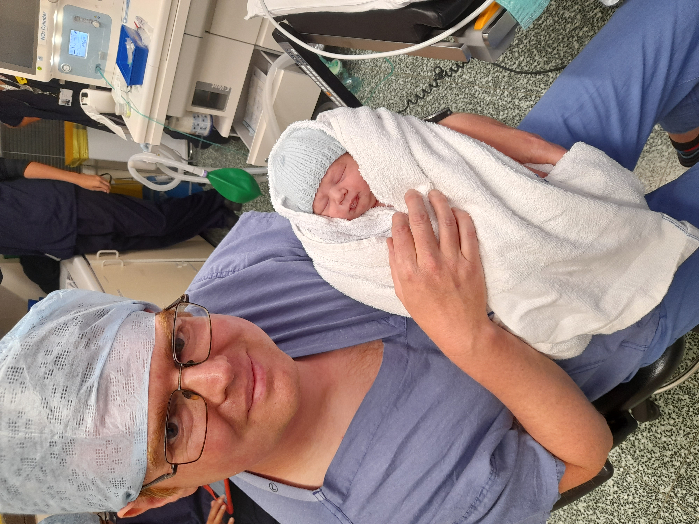

Becoming a Dad
This blog post isn’t about GIS, mapping, conferences or travel, so feel free to skip it if you want. However, if you’re interested in my experiences of becoming a Dad, read on. Be warned - it is quite a long post (~3000 words, ~6 pages) and contains details about birth, C-sections and medical treatment.

This is the story of bringing our son, Baby Bearman, into the world.
I’m calling him Baby Bearman here a) because we don’t have a name for him yet (you have 6 weeks after birth to decide, and we have been rather preoccupied recently!) and b) I don’t want this blog post to be the first thing that comes up when people search for his name!
Baby Bearman was due on Wed 25th June 2025, but ended up arriving early on Sun 8th June 2025, 2 and a half weeks early (at 37 weeks 4 days). All of us (Baby, Mum and Dad) are now doing well, although it has been quite a struggle at times.
Tue 3rd June
We start our journey at our antenatal appointment on Tue 3rd June, my wife, Louise’s blood pressure was borderline high. The reading was just under the threshold for them to worry about, so the midwife said to keep an eye on it and phone if we have questions.
Sun 8th June ~10am
On Sunday, Louise’s blood pressure was still a little high, so we phoned up the maternity advice line at 10am and they advised us to come in. Things started speeding up then, and happened very quickly, compared to the last 37 weeks /8 months!
We came in, and Louise had a blood pressure series done, where her blood pressure was taken every 5 minutes for half an hour. It was a bit high, so they sent blood and urine off for additional tests, and monitored the baby for an hour. The consultant explained a bit about pre-eclampsia, while Louise’s blood pressure was high, her urine dip test for protein was negative. You need to have both for pre-eclampsia to be diagnosed. To preempt further development of pre-eclampsia, the consultant recommended we consider early delivery of the baby. Usually they would wait until 41 weeks to induce (if the birth wasn’t spontaneous), but he recommended we induce at 39 weeks (18th June). Louise was given medication to reduce her blood pressure and we were booked for a followup appointment on the next day.
Sun 8th June ~4pm
On the way home, Louise developed a headache and took paracetamol. She continued to feel worse, and her headache got worse, so we phoned up (4:44pm). They advised us to come back in. She was feeling sick and threw up in the car. We got to Dorchester, and to the maternity unit. A nurse coming off shift took one look at her and took us straight in. We were in a shared ward and they assessed her. She was also suffering from edema (swelling) during pregnancy, but it had suddenly increased by now. Her blood pressure was higher. They tried to get an IV in but it was quite tricky because the pre-eclampsia makes the blood vessels smaller, compounded by the fact she had thrown up, so didn’t have much liquid left in her. She was given pills to reduce blood pressure but just threw them up again. She was also suffering photophobia - aversion to light - all the way from home into Dorchester, which is another symptom of pre-eclampsia. There were five people around Louise at this point, so it was getting rather crowded. We were moved to a private room. There they managed to get an IV in, done by an anesthesiologist with an ultrasound machine.
I would later discover that if the midwife had trouble getting an IV in, or taking blood, they would ask a consultant. If the consultant couldn’t do it, then the anesthesiologist would try. If they had trouble, they would use an ultrasound machine to see the blood vessels to help them gain access. At this point, Louise needed an anesthesiologist and an ultrasound machine!
They gave her IV paracetamol for her headache (which she would later describe as a migraine) and IV medications to lower her blood pressure. The consultant explained that the blood pressure was a result of the pre-eclampsia, and we later discovered that the pre-eclampsia had come on very very quickly. He said that Louise needed the placenta removed, and therefore needed to give birth. For this she needed an emergency C-section (caesarean section) as soon as possible. Louise’s consent was needed, and the consultant managed to explain the options in a way she could understand in the state she was in. Her blood pressure was still quite high at this point (one reading was 164/111, which is very high). The baby was being monitored throughout all of this, and he was fine. For the C-section operation, her blood pressure had to be under control. Therefore they put her on blood pressure medication via IV, and monitored her from about 7pm to about 10pm.
Sun 8th June ~10pm
By about 10pm, Louise’s blood pressure was under control and we were taken in for the C-section. I had to change into scrubs, and was allowed to be in the theatre with her. There must have been at least 10 people in the room and it was quite a busy experience. We had a great anesthesiologist, who talked Louise and myself through the whole process. Louise chose a spinal tap for pain management; less severe than a general anesthetic and so Louise could be conscious throughout the whole procedure. Her blood pressure was a little problematic, and there were a couple of times where she was quite out of it. Everything went well though and Baby Bearman was born at 22:46.
After they had taken the baby out, I was allowed to take some photos, and also cut the umbilical cord. It was quite a surreal experience and I was privileged to be a part of it.
We had about half an hour in recovery after the C-section. Louise recovered very quickly with the major pre-eclampsia symptoms disappearing as soon as the placenta was removed. We were then transferred to a room, with mum and baby having hourly checks. We had a midwife with us all the time, with a second mid wife there most of the time until 8am.
Mon 9th June
We stayed in the same room for most of the rest of the day. They still took hourly observations, but in general we were left to sleep. The baby slept a bit, but a lot of the time he wanted to be held, and when you are holding a baby you can’t sleep, so we didn’t get much sleep that day or Monday night. Louise was on fluid restriction, so limited to drinking 75ml per hour.
Monday day and evening progressed in a bit of haze. I did go and get some food from the hospital restaurant: a jacket potato at lunch time, which went down well, and some very spicy sweet and sour for dinner, which I had trouble eating. Louise had food brought to her (as the patient) which she demolished very effectively.
At 6:30pm, we were moved to room 4, where we would be for the rest of our stay. Monday night was really hard for both of us, as the baby wanted a lot of cuddles and wasn’t keen on being put down. I did have a bed, so when Louise had the baby I could lie down, but found it very hard to sleep as I was too stressed.
Tue 10th June
On Tuesday morning I went to get cereal in the day room. I sat there to eat it to have a bit of time out of our room, and I was completely overwhelmed. I sat there and cried. I had trouble processing what had happened, and looking back on it now, I was so sleep deprived (no sleep on Sunday night and not much on Monday night) I couldn’t process anything.
Another visitor came over and asked if I was OK. I said both mum and baby were OK (I didn’t realise at this point how serious things had been for Louise or the baby). She said she thought someone had died, based on how I was.
Later on Tuesday morning, one of the midwives visited and we talked a bit. This was mostly how Louise was getting on and how the baby was. Nobody explicitly asked me how I was doing. However, I knew enough about my mental health to realise that I was struggling and that I needed to say something, and this midwife looked like the person to say it to. I said to her I was struggling with everything. She listened and said we could talk. We had a good talk, and I tried to explain how I felt. It was at this point I realised I hadn’t slept for 48 hours+, which contributed to how I was feeling. The midwife explained about how we had to support each other and tag-team with the baby, i.e. I do some feeding and cuddling while Louise rests, and Louise does feeding and cuddling while I rest. She also let us know that it is often the case that the second night after birth (i.e. last night, Monday night for us) was the worst.
Given that we were likely to be in the hospital a bit longer, I was encouraged to go home for a bit of a break. Due to the fact the pre-eclampsia had come on so quickly, and we came in two and half weeks earlier than planned, I had brought no spare clothes with me. We already had stuff packed for the baby (nappies, wipes, etc.) and a couple of bits for Louise (maternity top, change of underwear) but I didn’t have anything. When we left on Sunday I did have the presence of mind to throw some snacks and drinks in a bag which were a life saver.
I went to Sainsbury’s to pick up some muslin and socks for the baby and I had a lovely call from my brother in law, Peter (Louise’s brother). He knew that I was an only child, and he said he knew people would be seeing how Louise and the baby were doing, but he wanted to ask how I was doing. I was touched by this and very grateful for the phone call.
While I was driving home, I had a very deep and meaningful thought. Of course, it seemed deep and meaningful at the time, but I was lacking in sleep, so it could be complete rubbish! I thought that whilst my world has completely changed with the birth of my son, the rest of the world hasn’t changed at all. Everything is exactly the same as it was before he was born. From globally crucial things like the wars in Russia/Ukraine and Israel and climate change, to the mundane and everyday, like the oddly designed set of traffic lights by Asda in Weymouth which you have to be very careful driving through. Since then everything has sunk in a bit more, so I am more used to him being here, and everything seems less “different”.
Tuesday night in hospital was better. We planned a bit and managed to tag-team, with me doing some feeds while Louise rested and Louise doing some feeds while I rested. We both got a bit of rest, although looking back now, we both still slept badly in the hospital, but it was so much better than the night before by comparison! I had jacket potato for dinner that evening.
Of course, Louise was in quite a lot of pain from the C-section. She had been given regular paracetamol, and at this point two doses of ibuprofen. One midwife on Tuesday evening refused to give Louise ibuprofen, despite her having it previously. The midwife said it wasn’t written on her chart, so she couldn’t have it; despite Louise’s protests that she’d had it twice already! She gave Louise dihydrochloride instead which was supposed to be a more powerful painkiller, but it didn’t make much impact on Louise’s pain. In fact the pain got worse, because she didn’t get the ibuprofen. Later on, Louise said this issue with the pain medication set back her recovery.
After the shift change, a new midwife came on and gave Louise ibuprofen when she asked for it, which helped with her pain. Apparently the ibuprofen had actually been written on Louise’s chart, but in “a funny place”. We never established what that meant.
Later on the same evening Louise was given a dose of Nifedipine, medicine to manage her high blood pressure. Her blood pressure had been monitored 4 hourly and was still high, an after effect of the pre-eclampsia. In the early hours of the morning, very suddenly Louise had heart palpitations and a very fast heart rate. It was quite scary for her. She used the call button, but by the time someone had come the palpitations had eased a bit. A cardiac nurse did come in and run an ECG test to check Louise’s heart, and everything looked fine. She didn’t have the palpitations again. Louise had been prescribed Nifedipine every twelve hours after the C-section - 9am and 9pm, 20mg. When 9am came around, the Nifedipine pills looked different to the ones she’d had at 9pm the previous night. At 9am she had two small pink pills which we were told was 20mg; at 9pm night before she’d had two different pills (maybe a different brand), which she was told was 2 x 10mg but we suspect were 2 x 20mg pills. This probably caused the heart palpitations. This was rather worrying and we have tried to keep a close eye on the pills since. This is quite tricky in hospitals, particularly when sleep deprived and when the pills are delivered in a small paper cup, it’s hard to know what they are. Also when they are delivered with a not great bedside manner, this makes it harder to ask and check what you are being given.
Wed 11th June
Louise had been very unwell with the pre-clampasia and was getting better having given birth, and with our sleep deprived states it was hard to process our emotions, so we were struggling a bit. Later on that morning, we had a visit from the feeding team, and Baby was weighed. He’d lost 12.8% from his birth weight.
It’s usual for babies to lose some weight after giving birth - going from a nice warm, dark womb where food is provided on demand through an umbilical cord, to a bright, (relatively) cold, dry world, where you actually have to suckle and swallow to get food is quite a shock to the system! Particularly if you are born at only 37 weeks and 4 days, so ~2.5 weeks early (although babies are fully developed at 37 weeks).
The 12.8% loss is more than the typical 10% loss that is normal, so they were a bit worried about his weight and feeding. The feeding team talked to us about his feeding. He was happy going on Louise’s breast, but wasn’t suckling so hadn’t really taken on any milk since birth. They put us on a feeding plan, with a specific amount of milk (50ml) to give him every 3 hours. Louise was producing milk, so they introduced us to a breast pump, which we used, and then gave to Baby in a bottle. We then topped it up to 50ml with formula, every 3 hours. I was shown the ropes for sterilising the kit and bottles, and given the task of fetching, cleaning and sterilising the kit for every feed. Louise said that I spent a lot of time looking after the baby on Wednesday, giving her time to sleep and recover.
Louise’s parents visited today and arrived early afternoon. It was lovely to see them, and they stayed until around 5pm. We had dinner down in the hospital restaurant - jacket potato again for me and then they headed off. I slowly was feeling better and the visit made a nice change from the hospital routine.
It is amazing how frequently the advice around birth and newborns changes. One of our midwives, who was a third year student midwife, said that something she had learnt in her first year of study had now changed, with a better technique for feeding directly after birth. The advice changes frequently, and it even changed while we were in hospital! Louise had her C-section dressing checked, and removed this evening. Later on, the same midwife came back and said the advice for C-section dressings had changed, and now they were left on for five days rather than three, as this had been shown to reduce infection, so they replaced Louise’s dressing.
By Wednesday evening, everything was getting better and we were feeling more on top of things. We had some great advice from one of the midwives that evening about bottle feeding and successfully burping a baby - apparently burping is something they actually have to learn how to do!
The feeding plan the baby was on was going well, and Louise was expressing milk well. I was getting used to sterilising the equipment each time, and making the 55 metre walk, each way, twice every three hours (a total of 1.76 km every 24 hours), to get the bottles for Louise to express, and then return them and to wash and sterilise them. Louise was still trying to breast feed but having very limited success.
Later on that evening I had woken up for the ~1am feed and wasn’t feeling particularly with it. We needed the steriliser and bottles for Louise to express and I wasn’t feeling up to the long walk, so we asked one of the staff to get it for us, which they were very happy to do. She returned with the sterilising kit, but not the bottles. We asked her whether the bottles were there and she swore blind that they were not there. She got us some new bottles so Louise could do the expressing. The following feed I was more with it, so I went and checked and discovered the bottles were there, exactly where I said they were!
Thu 12th June
On Wednesday I had run around doing lots of things, and I think I had probably over done it: I wasn’t feeling that great. I broke down and cried again. I hadn’t eaten much and I think my brain had processed a bit more of what had happened and was struggling with it. We did have some good news that we were likely to be discharged on Thursday!
One of the midwives came to go through the discharge process, and in the check in, Louise said to her that I had been struggling. She had a chat with me, and asked whether I was looking after myself and whether I’d been eating enough. Thinking about it, I’d not really been eating enough since Sunday. Sunday night I had nothing, being preoccupied with the C-section (although I had had a main meal in the middle of the day). Monday I had toast for breakfast, jacket potato for lunch and a bit of sweet and sour pork for dinner. Tuesday I had cereal for breakfast, risotto for lunch (when I went home to pick up stuff) and jacket potato for dinner. Wednesday was toast for breakfast, jacket potato for lunch and jacket potato again for dinner. So I had been eating much less than normal for me. Discovering this, she essentially kicked me out of the room to go and get some lunch while she went through feeding and baby checks with Louise, which would take a while. I am eternally grateful for this and I took the opportunity to go to a nearby pub and have a decent burger and chips. I felt much better after this and was rather amazed that I had ended up in this position - missing out meals and not eating enough is not at all normal for me.
Louise’s parents arrived about 3pm, while we were getting sorted for discharge. I made various trips back to the car with stuff, and also managed to fit the child seat. We had had the child seat for a little while, but I hadn’t actually fitted it yet as I was planning on having 3 more weeks to work out how to fit it, before Baby was born!
We got out of the hospital about 5pm, and by pure coincidence saw the anesthesiologist from Louise’s C-section. She was thrilled to see us, and to see us leaving - Louise had been quite poorly because of the pre-eclampsia when she last saw us, so she said it was such a massive difference to see her looking so much better.
Over our 4 nights and 5 days in the hospital, we had some great care and met some fantastic staff - I can’t thank them enough for their time, patience and skill in looking after us. However, it was also clear they were massively overworked, short staffed and a couple of them were mediocre or even poor. The NHS is a fantastic institution with some great staff, but it also has some major issues. We can’t wave a magic wand and solve these issues but we need to find solutions that work, whilst keeping all of the fantastic elements that are in it.